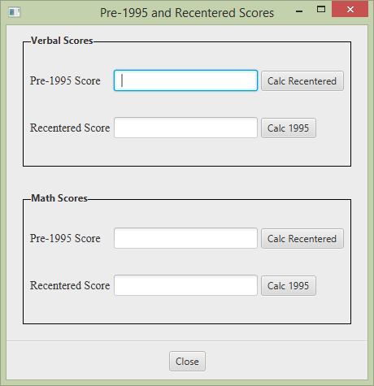

In 1995, standardized test scores were raised to reset the midpoint of the current testing results for better analysis. This application converts today's scores with those from before 1995.
Access this from Calc > Scores.
Verbal scores are entered in the top section. Math scores are entered in the bottom section. Enter a value in the text boxes and press return; the corresponding recentered or 1995 text box will be automatically updated. Alternatively, use the buttons to the right of the text boxes.
The values must be between 200 and 800 in both cases, pre-1995 and recentered. If you attempt to enter an invalid score in this range, say "675", the value will be rounded according to a setting. See the Settings section.
Close the window using the Close button.
This screen allows you to configure the application by saving preferences to a file kept in your home directory. The config file is saved under name .oldscores and can be safely removed at any time.

Not every score is valid. The application will display an error if the score is out of bounds: below 200 or greater than 800. If the score is within bound but not a valid score, say "675", this setting will round the score up to 680 (Round Up) or down to 670 (Round Down), rather than throw an error.
Displays the title of the application, copyright information, and a graphic of the creator (Bekwam, Inc.). Launch using the Help > About menu.
Get instructions from the Help > Help Contents menu. Displays this screen.